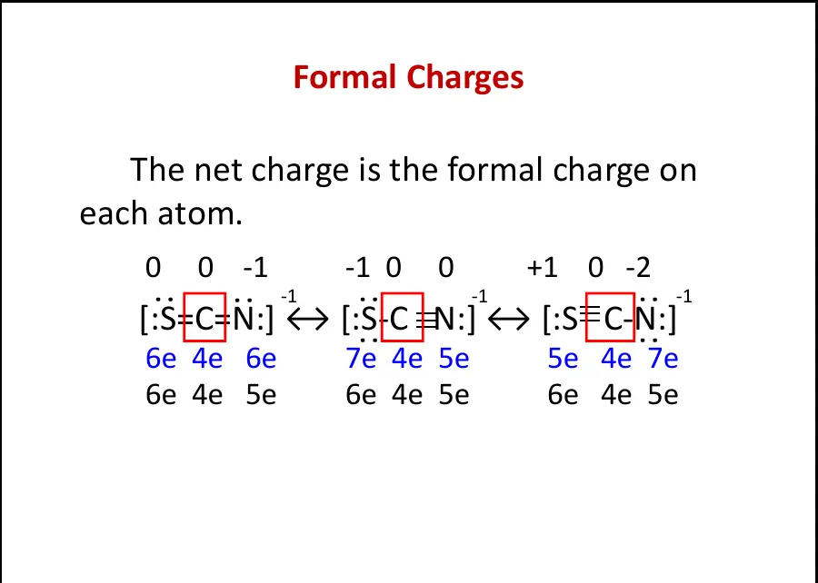
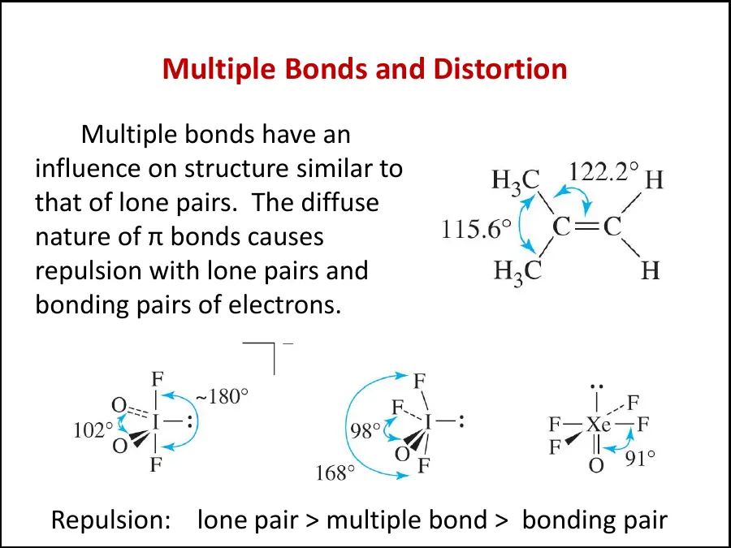
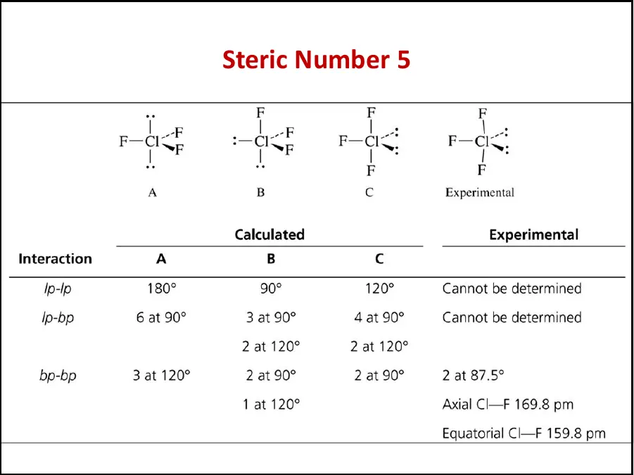
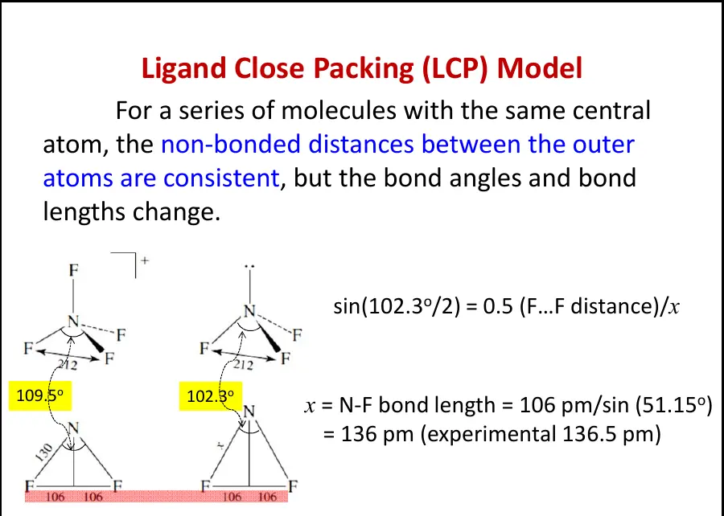

LESSON 03 · SIMPLE BONDING THEORY
简单成键理论：Lewis 结构、共振与 VSEPR
从电子计数出发预测分子连接方式与空间构型，同时明确简单模型能解释什么、又在哪里必须让位于分子轨道与现代超价键理论。
1. 简单模型的任务与边界
Lewis 结构、形式电荷和价层电子对互斥理论（VSEPR）共同构成无机化学中最快速的结构预测工具。Lewis 结构回答“哪些原子相连、价电子怎样记账”，形式电荷帮助比较多种合理画法，VSEPR 则把中心原子周围的电子域排布转换为空间几何。三者适合处理主族分子与离子的骨架、键角大致范围、孤对电子数以及分子是否可能具有偶极矩。
这些模型都是低分辨率地图。Lewis 线条不等于可观测的局域电子对，共振式不是分子在不同结构之间快速跳动；VSEPR 能预测几何，却不直接给出键能、光谱、磁性和精确电子密度。对电子缺陷化合物、过渡金属配合物、强离域体系以及所谓“超价分子”，必须进一步使用分子轨道、三中心四电子键、配体场或量子化学计算。正确的学习方式不是因为模型近似就放弃它，而是始终注明其适用范围。
2. Lewis 结构的系统画法
- 计算总价电子数
把各原子的族价电子相加；阴离子按负电荷数增加电子，阳离子相应扣除电子。自由基可能得到奇数。
- 选择中心原子并连接骨架
通常选择电负性较小、可形成较多键的原子；H 和 F 几乎总处于端位。先用单键连接，每根键记作两个电子。
- 先满足端原子的价层
通常先给端位原子补足八隅体，再把余下电子放到中心原子。H 只需两个电子，B、Be 等可稳定于不完整八隅体。
- 必要时形成多重键
若中心原子仍缺电子，可把邻近原子的孤对电子转为 π 键；随后计算形式电荷并比较候选结构。
- 进行三项核对
总电子数是否正确；每个原子的电子数是否合理；各原子形式电荷之和是否等于分子或离子的总电荷。
“满足八隅体”是第二周期主族元素尤其有用的经验规则，却不是自然界不可违反的定律。BF₃ 的 B 只有六个价层电子，NO 含奇数电子，SF₆ 的经典 Lewis 图则在 S 周围放置十二个电子。遇到这些体系时，电子总数与实验事实优先于机械凑八隅体。
3. 共振：多个画法描述同一个量子态
当固定原子骨架可以画出两种或更多只在 π 键、孤对电子或形式电荷位置上不同的 Lewis 结构时，这些画法称为共振贡献式（resonance contributors）。真实分子是一个离域电子态，不是若干结构按时间轮换，也不能把双向箭头误写成化学平衡箭头。贡献式之间只能移动电子，不能移动原子或改变 σ 键骨架。
SO₂ 可画成两个等价的主要贡献式，因此两根 S–O 键实验上等长，其键级介于所画单键与双键之间。对完全等价的两个贡献式，可以把总 π 键级平均分配；但“平均键级”是记账结果，不意味着每根键由半根实体双键组成。真正的离域来源于多个原子轨道组合形成跨越多个中心的分子轨道。
判断贡献大小时通常依次考虑：完整价层是否得到满足、形式电荷绝对值是否较小、相邻原子是否出现不必要的同号电荷，以及负形式电荷是否位于电负性较强的原子。最稳定贡献式权重较大，但少量次要贡献式仍可能显著影响键长、偶极矩与反应性。
4. 形式电荷的定义与计算
形式电荷（formal charge）是在“每根共价键的电子平均分给两端原子”的假想规则下，对每个原子进行的电子记账。它不是实验测得的原子净电荷，也不等于氧化态。计算式为：
所有原子的形式电荷之和必须等于粒子的总电荷。这是最有效的自检条件。比较结构时，“形式电荷尽可能接近零”和“负电荷尽量落在电负性较强原子上”是有用指南，但不是绝对优先级。CO 的最佳 Lewis 画法为 ⁻C≡O⁺，负形式电荷落在较不电负的 C 上，却同时让两原子满足八隅体并符合成键事实；模型中的几条规则必须整体权衡。

5. SCN⁻：如何比较不等价共振贡献式
SCN⁻ 的原子骨架为 S–C–N，课件列出 S=C=N⁻、⁻S–C≡N 与 S⁺≡C–N²⁻ 三种画法。第一式的形式电荷为 0、0、−1，第二式为 −1、0、0，第三式为 +1、0、−2。第三式具有较大的电荷分离和 −2 形式电荷，能量明显较高，贡献很小。
第一式把负电荷放在电负性更强的 N 上；第二式则形成稳定的 C≡N 三键，并把负电荷放在更大、更易极化的 S 上。因此不能只凭一条口号把第二式完全删除。总体上前两式共同贡献，第一式通常更重要。实际 S–C 与 C–N 键长应分别偏离理想整数键长：S–C 介于单、双键，C–N 介于双、三键；课件表述“实际结构位于第一和第二式之间”正是这个意思。
答题模板：比较共振式
先核对八隅体与总电子数，再列出每个原子的形式电荷；随后比较电荷分离程度和负电荷位置；最后写出实验后果，例如键长均化、键级非整数或电荷离域。不能只写“越稳定越多”而不给出稳定来源。
6. BF₃：Lewis 模型暴露出的信息
把 BF₃ 画成三个 B–F 单键时，B 只有六个价层电子，但所有原子形式电荷为零。若从 F 的孤对电子向 B 形成 B=F 双键，B 可满足八隅体，却产生 B⁻–F⁺ 的形式电荷分离，而且正形式电荷位于高电负性的 F 上。这说明“中心原子必须凑足八隅体”并非唯一准则。
实验 B–F 键长约 131 pm，比简单单键估计值 152 pm 短，说明平面 BF₃ 中确有 F 的已占 p 轨道向 B 的空 p 轨道提供 π 电子密度，常写作 pπ–pπ 回馈。由于三个 F 的组合轨道与 B 轨道相互作用，不能把电子局域为某一根固定 B=F 双键；分子轨道描述比三张等价双键共振图更准确。与此同时，F 的高电负性使其 2p 轨道能量较低，能量匹配并不理想，所以 π 相互作用不足以消除 B 的 Lewis 酸性。
因此 BF₃ 既展示了 Lewis 结构的价值，也展示了它的局限：不完整八隅体提示 B 具有受电子对能力；缩短的 B–F 键提示离域 π 相互作用；最终反应性还取决于轨道能量、几何重组和配体效应，而不由某一张 Lewis 图单独决定。
7. VSEPR 的核心：先数电子域，再删去孤对电子
价层电子对互斥理论（VSEPR theory）认为中心原子价层中的电子域（electron domain）趋向彼此远离，以降低电子云之间的排斥。一个单键、双键或三键都算一个成键电子域；一对孤对电子算一个非键电子域。电子域总数也称立体数（steric number）。先由立体数确定电子域几何，再忽略孤对电子所占位置得到分子几何；这两个答案必须分开。
课件给出一种快速计数法：中心原子的价电子数加上外围原子用于成键的电子数，再除以二得到电子对数。对常见单价端原子有效，但面对 O、配体电荷、多重键和过渡金属时容易误用。更稳妥的方法是先画 Lewis 结构，直接数中心原子周围的 σ 键方向与孤对电子数。
8. AXmEn 记号与分子几何名称
AXmEn 中 A 是中心原子，X 是与其相连的外围原子，E 是中心原子上的孤对电子。NH₃ 为 AX₃E：四个电子域呈四面体（tetrahedral）排布，删去一个孤对电子后分子呈三角锥形（trigonal pyramidal）；H₂O 为 AX₂E₂，删去两个孤对电子后呈折线形（bent）。下表中的“电子域几何”包括孤对电子的位置，“分子几何”只描述原子核的位置。
| 立体数 | AXmEn | 电子域几何 | 分子几何（中文） | English name | 理想键角 | 示例 |
|---|---|---|---|---|---|---|
| 2 | AX₂ | 直线形 | 直线形 | linear | 180° | CO₂、BeCl₂ |
| 3 | AX₃ | 平面三角形 | 平面三角形 | trigonal planar | 120° | BF₃、SO₃ |
| AX₂E | 折线形／角形 | bent / angular | <120° | SO₂、NO₂⁻ | ||
| 4 | AX₄ | 四面体 | 四面体形 | tetrahedral | 109.5° | CH₄、NH₄⁺ |
| AX₃E | 三角锥形 | trigonal pyramidal | <109.5° | NH₃、PCl₃ | ||
| AX₂E₂ | 折线形／角形 | bent / angular | <109.5° | H₂O、OF₂ | ||
| 5 | AX₅ | 三角双锥 | 三角双锥形 | trigonal bipyramidal | 90°、120°、180° | PCl₅、SbCl₅ |
| AX₄E | 跷跷板形 | seesaw / disphenoidal | <90°、<120° | SF₄、SeF₄ | ||
| AX₃E₂ | T 形 | T-shaped | 约 90°、180° | ClF₃、BrF₃ | ||
| AX₂E₃ | 直线形 | linear | 180° | XeF₂、I₃⁻ | ||
| 6 | AX₆ | 八面体 | 八面体形 | octahedral | 90°、180° | SF₆、[PF₆]⁻ |
| AX₅E | 四方锥形 | square pyramidal | 约 90°、180° | BrF₅、IF₅ | ||
| AX₄E₂ | 平面正方形 | square planar | 90°、180° | XeF₄、[ICl₄]⁻ | ||
| 7 | AX₇ | 五角双锥 | 五角双锥形 | pentagonal bipyramidal | 72°、90°、180° | IF₇ |
| 8 | AX₈ | 平方反棱柱形（常见之一） | square antiprismatic | 非单一理想角 | [ZrF₈]⁴⁻ | |
中文名称的易混点
trigonal 通常译为“三角”，pyramidal 为“锥形”，bipyramidal 为“双锥形”；square 在这里指“四方／正方形底面”。“平面三角形”也常写作“三角平面形”；“折线形”也称“角形”或“V 形”，英文常见 bent 与 angular。
分子极性不能只看键是否极性，还要做矢量相加。CO₂ 的两根 C=O 键各自极性很强，但直线形（linear）的对称性使偶极矩抵消；H₂O 的两根 O–H 键形成夹角，因此保留净偶极矩。若外围原子不完全相同，即使电子域几何高度对称，也常因键偶极大小不等而具有极性。
9. 为什么孤对电子会压缩键角
常用排斥顺序为“孤对–孤对 > 孤对–成键对 > 成键对–成键对”。孤对电子只受一个原子核束缚，电子云在中心原子附近更弥散，占据更大的有效空间；成键电子同时受两个原子核吸引，电子密度沿核间方向收缩。因此 CH₄ 的理想键角为 109.5°，NH₃ 降至约 106.6°，H₂O 再降至约 104.5°。
这套“体积”语言是对电子密度与排斥能的定性压缩，不应把孤对电子想成有固定外壳的气球。键角是多种效应共同优化的结果，包括中心原子与配体的轨道能量、键的极性、成键程度和配体间排斥。VSEPR 的顺序适合判断方向，却不能保证精确预测每一个数值。

10. 多重键、电负性与键角
双键和三键在 VSEPR 计数中都只算一个电子域，但其 π 电子密度使该电子域通常比单键更“宽”，会更强地排斥相邻电子域。因此在平面三角形中心附近，多重键两侧的夹角往往扩大，而其余单键之间的夹角被压缩。预测时应先画理想几何，再根据“孤对电子 > 多重键 > 单键”的相对影响判断偏折方向。
外围原子的电负性也会改变中心附近的成键电子密度。PX₃ 中，电负性较强的 F 把 P–F 键电子拉离中心 P，使中心附近的成键域变小，P 上孤对电子相对更容易展开，于是 F–P–F 角约 97.8°；PCl₃ 与 PBr₃ 分别约 100.3°、101°。这并不是“F 原子体积最小，所以夹角最小”的简单空间位阻结论，而主要是键电子密度分布变化。
当外围原子相同而中心原子从 N 变为 P、As 时，NCl₃、PCl₃、AsCl₃ 的键角依次约为 106.8°、100.3°、98.9°。向下同族后，中心原子的价轨道更弥散，成键可能更接近彼此正交的 p 轨道方向，键角趋近 90°；电负性差和 s–p 混合程度也共同参与。课件将其概括为电负性差增大导致角度减小，考试时可用，但拓展解释应同时提到轨道杂化减弱。
11. 三角双锥：轴向与赤道位置并不等价
立体数 5 的电子域几何为三角双锥（trigonal bipyramidal, TBP）。三个赤道位彼此夹角 120°，每个赤道位与两个轴向位夹角 90°；两个轴向位彼此 180°，但每个轴向电子域要与三个赤道电子域形成 90° 相互作用。因此轴向键通常承受更强排斥、键长更长。PCl₅ 中轴向 P–Cl 键比赤道键长，不能把五根键视为完全等价。
孤对电子优先占据赤道位，因为赤道位只有两个 90° 相互作用，而轴向位有三个。由此，SF₄（AX₄E）形成跷跷板形，ClF₃（AX₃E₂）形成 T 形，XeF₂（AX₂E₃）形成直线形；后三个孤对电子均尽量放在赤道平面。判断此类结构时应先安排 E，再安排 X。
当配体不同时，体积较大或电负性较低、使键电子更靠近中心的配体通常偏好赤道位；较小、较电负的配体较常占轴向位。例如含 F 与有机基团的五配位主族化合物中，F 往往更偏轴向，甲基更偏赤道。该规则是电子域排斥的趋势，不是无条件的绝对定律，实际结构还受键强度、配体效应和晶体环境影响。

12. 六、七、八配位及其畸变
立体数 6 通常采用八面体。一个孤对电子得到 AX₅E 的四方锥形，如 BrF₅；两个孤对电子若相对放置，可得到 AX₄E₂ 的平面正方形，如 XeF₄。八面体的六个位置原本等价，因此不像三角双锥那样先区分轴向与赤道；孤对电子的相对位置由尽量减少彼此排斥决定。
配位数 6 不必永远是八面体。某些配合物可呈三棱柱或发生 Jahn–Teller 畸变；VSEPR 对过渡金属 d 电子参与的体系通常不如配体场理论可靠。立体数 7 常见五角双锥，如 IF₇；配位数 8 常见平方反棱柱或十二面体。随着配位数增加，几何之间的能量差可能变小，配体尺寸、金属半径与晶体堆积的影响变得更重要。
所以“由配位数唯一决定构型”是错误的。配位数只告诉直接邻接数，电子域几何还需知道孤对电子、配体类型以及中心原子的电子结构。主族分子的电子对计数与配位化学中的配位数也不完全相同：多重键在 VSEPR 中算一个电子域，而多齿配体的多个供体原子会分别计入金属配位数。
13. 关于 sp³d、sp³d² 与“d 轨道扩展八隅体”的现代修正
课件采用传统语言，把三角双锥写作 sp³d，把八面体写作 sp³d²，并称第三周期及以后元素“使用 d 轨道形成超过四根键”。这套标记能方便地把电子域数与几何对应起来，但不应解释为中心原子真的把一个 s、三个 p 和一个或两个 d 轨道等量混合，再形成五或六根完全等价的定域二中心键。
以 PF₅、SF₆ 等主族超价分子为例，中心原子价层 d 轨道通常能量较高，对占据成键轨道的贡献很小。现代描述更多使用离域分子轨道、离子性以及三中心四电子（3c–4e）相互作用。三个沿直线排列的原子轨道组合成成键、近似非键与反键轨道，四个电子占据前两个，从而在两个相邻键上产生总计约一个净键级。对 SF₆ 之类更高对称体系，需要把多个配体群轨道与中心原子适当对称性的轨道整体组合。
考试与理解如何兼容
若题目按课件要求填“杂化类型”，可写 TBP → sp³d、八面体 → sp³d²；但在解释真实成键时应补一句：这是几何对应的传统杂化标签，现代量子化学并不认为低能价层 d 轨道是主族超价成键的必要条件。这样既符合课程记号，又避免形成错误物理图像。
14. 三中心四电子键的定性图景
3c–4e 模型最容易由 XeF₂ 理解。两个 F 的轴向 p 轨道先组成同相和反相配体组合，其中与 Xe 的 p 轨道对称性匹配的一组发生相互作用，产生跨越 F–Xe–F 三个中心的成键与反键轨道，另有一个近似非键轨道。四个电子填入成键和非键轨道，反键轨道为空；净成键作用分布在两根 Xe–F 联系上。
这个模型同时解释了为何超价键常比普通二中心双电子键弱、为何结构具有明显线性方向，以及为什么无需让中心原子“调用 d 轨道扩容”。在 Lewis 记账中，Xe 周围似乎超过八电子；在分子轨道图景中，电子并未都局限在 Xe 的原子价层壳上，而是离域在整个三中心体系。所谓“扩展八隅体”描述的是 Lewis 图的电子计数，不是原子轨道突然获得额外容量。
同样的思想也可用于 I₃⁻、ClF₃ 的轴向部分和许多卤素间化合物。VSEPR 仍可快速预测其形状，而 3c–4e 模型负责解释电子如何成键；两个模型解决的问题不同，可以同时使用。
15. Ligand Close Packing 模型：从电子对排斥转向配体接触
配体紧密堆积模型（ligand close packing, LCP）把分子几何的一个重要限制归因于外围配体之间的非键接触距离。对于具有同一中心原子、同类配体的一系列分子，外围原子之间允许的最短非键距离往往相近；当中心–配体键长改变时，键角会随之调整，以维持合适的配体间距。
课件比较 NF₃ 与 NF₄⁺。若把相邻 F···F 距离近似保持为 212 pm，在 NF₄⁺ 的理想四面体中 F–N–F 为 109.5°；NF₃ 的实际键角约 102.3°。由等腰三角形几何，半个 F···F 距离等于 N–F 键长乘以半角正弦：

LCP 不是对 VSEPR 的简单否定。VSEPR 关注中心附近价层电子密度的排斥，LCP 强调外围配体的空间接触；真实结构由电子能量整体最小化产生，两种模型从不同侧面捕捉同一结果。对较大配体、键长变化明显或传统“孤对电子体积”解释不充分的系列，LCP 尤其有启发性。
16. 常见分子的逐步判断
SO₃ 与 SO₃²⁻ 为什么形状不同？
SO₃ 有三个 S–O 成键域、中心 S 无孤对电子，AX₃，平面三角形；三个等价 S–O 联系可用离域 π 成键描述。SO₃²⁻ 总价电子多两个，中心 S 留有一对孤对电子，为 AX₃E，电子域四面体、分子三角锥形。不能只看到“都连接三个 O”就判相同构型。
SeF₄ 的构型
Se 有 6 个价电子，形成四根 Se–F 单键后中心保留一对孤对电子，共五个电子域。孤对电子占三角双锥赤道位，因此 SeF₄ 为跷跷板形；轴向键通常比赤道键长。
XeO₃ 与 XeO₂F₄
XeO₃ 可按三个 Xe=O 域加一个孤对电子处理，为 AX₃E、三角锥形。XeO₂F₄ 有六个成键域，理想电子域为八面体；两个较强、较宽的 Xe=O 域倾向彼此反式安排以减小排斥。对重稀有气体化合物，VSEPR 给出几何骨架，精确成键必须用离域分子轨道解释。
IF₇ 与 PH₃
IF₇ 为七个成键域、无孤对电子，典型五角双锥。PH₃ 为 AX₃E、三角锥形，但 H–P–H 角约 93.5°，远小于理想四面体角；这反映重主族氢化物的 s–p 混合较弱，三根键更多使用近似互相垂直的 p 轨道，不能只靠“sp³ 杂化”解释。
17. 高频错误与判题陷阱
- 共振式之间使用双向共振箭头，不使用表示化学平衡的两条半箭头；原子位置和 σ 骨架必须相同。
- 形式电荷是平均分配共价键电子的记账量；氧化态则把键电子分给更电负的原子，两者不可互换。
- 最优 Lewis 结构不是无条件追求所有形式电荷为零；八隅体、负电荷位置与电荷分离需要综合判断。
- 双键、三键在 VSEPR 中都算一个电子域，但排斥通常强于普通单键域。
- 必须区分电子域几何与分子几何：NH₃ 的电子域是四面体，分子形状是三角锥。
- 孤对电子通常比成键电子域占据更大角空间，因此会压缩相邻键角。
- 三角双锥的轴向和赤道位不等价；孤对电子及体积较大的配体优先选择赤道位。
- 八面体的六个位置初始等价；AX₄E₂ 中两个孤对电子通常相对排列，得到平面正方形。
- 五、六电子域对应 sp³d、sp³d² 只是传统几何标签，不应当作主族超价成键的现代微观机制。
- 配位数不能单独唯一决定构型，特别是过渡金属体系还受 d 电子构型与配体场影响。
- 电负性较强的端原子把键电子拉离中心，可能减小中心附近的成键域并改变键角。
- LCP 模型中的外原子非键距离是经验近似，不是所有分子都严格固定的常数。
18. 统一解题流程与作业提示
第一步，精确计算总价电子数并确定合理骨架；第二步画出所有重要 Lewis 结构，标明孤对电子、总电荷和形式电荷；第三步判断是否存在等价或不等价共振，并据此预测键长均化；第四步对每个中心原子数电子域，写 AXmEn；第五步从电子域几何删去孤对电子，得到分子形状；第六步按孤对电子、多重键、配体电负性和体积修正理想键角；第七步用对称性判断键偶极能否抵消；最后检查模型是否适用于该体系。
对五配位题，务必先区分赤道与轴向位置，比较 90° 相互作用数；对所谓扩展八隅体题，课程填空可保留传统杂化标签，解释题则写出 d 轨道参与并非必要、电子具有离域性。对共振题，结论必须落到实验性质：等价键、非整数键级、键长介于整数键之间或电荷离域，而不是只罗列画法。
本次课件指定主教材第 4 版习题 2.27、2.29、2.37、2.38、2.39，以及 3.18、3.25、3.27、3.34、3.35，提交日期为 2026 年 9 月 30 日。习题跨越上一章原子结构与本章简单成键理论，做题时应把电子排布、形式电荷、VSEPR 和现代成键修正联系起来。
19. 本章知识网络
提供骨架、孤对电子和候选多重键，是形式电荷与 VSEPR 的输入。
优先较小电荷分离，并结合电负性与完整价层判断权重。
解释等价键、非整数键级和中间键长；更深层本质由分子轨道给出。
先定电子域几何，再去除孤对电子；畸变由不同电子域排斥强弱决定。
传统 d 杂化可作几何标签，但不是现代主族超价键的必要机制。
用外围原子的紧密堆积补充 VSEPR，对键角与键长联动提供几何解释。
整章的核心不是背一张形状表，而是建立“电子数 → 电子分布 → 空间排布 → 可测结构”的因果链。简单模型越容易使用，越要记住它省略了什么；能够同时给出课程要求的预测和模型层级的说明，才是无机化学式的结构思维。